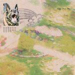

Music Reviews
-
Sweeping Promises Good Living is Coming For You
The lo-fi tinged new wave of Lira Mondel and Caufield Schnug emerges with tuneful pop smarts that could've ignited any college rock scene in the early eighties.
Juan Edgardo Rodríguez reviews... -
King Krule Space Heavy
Dark and sonically cavernous, Archy Marshall's fourth release as King Krule fills the innermost spaces of his soul with glacial rhythms that vacillate with tension and release.
Juan Edgardo Rodríguez reviews... -

Feeble Little Horse Girl With Fish
The Pittsburgh, Pennslyvania indie rockers' second album is an assured statement for a self-reliant band that splits the difference between fuzzed-out maximalists and earnest pop songsters.
Ethan Beck reviews.... -
The Lemon Twigs Everything Harmony
Four albums in, the D'Addario brothers transcend their classic rock influences by sounding very of its time and timeless all at once.
Juan Edgardo Rodríguez reviews... -

The Smashing Pumpkins ATUM
A three-act behemoth that operates in true Pumpkins fashion.
Juan Edgardo Rodríguez reviews... -
Everything But The Girl Fuse
Everything But The Girl are back with new record, 24 years after their last. Is it a welcome return?
David Coleman reviews… -

boygenius the record
No Ripcord is 24 years old today. Let's talk about the highest rated record of 2023 to celebrate.
David Coleman reviews… -
Wednesday Raw Saw God
Led by Karly Hartzman's ashy poetry, the Asheville North Carolina's second album captures a glimpse into the fringes of rural America through multihued '90s college rock.
Juan Edgardo Rodríguez reviews... -
U2 Songs of Surrender
Songs of Surrender finds U2 reimaging tracks from throughout their career to mixed results. There are some bold successes but also many efforts that fall flat.
Joe Marvilli goes through U2’s latest uneven release… -
Yves Tumor Praise a Lord Who Chews But Which Does Not Consume; (Or Simply, Hot Between Worlds)
On their fifth album, the art-rock iconoclast achieves the difficult task of remaining as perplexing as ever while forging a more inviting sound.
Juan Edgardo Rodríguez reviews...